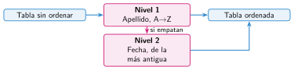
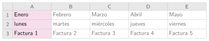

Organizar los datos: ordenar, series, filas y hojas
Criterios: 3a, 3f
🤔 Pienso10 min
Qué hago aquí: Piensa un momento y contesta con lo que ya sabes. No pasa nada si no lo sabes: es para empezar.
En una lista de 300 clientes hay dos que se apellidan García. ¿Cómo decidirías cuál va primero?
📖 Leo y aprendo40 min
Qué hago aquí: Lee despacio, mira los dibujos y los ejemplos, y quédate con la idea clave del final.
Ordenar es poner las filas de una tabla en orden según una columna: de la A a la Z (ascendente) o de la Z a la A (descendente); de menor a mayor o al revés.
- Un criterio: haz clic en una celda de la columna y pulsa Datos › A→Z o Z→A.
- Varios criterios: Datos › Ordenar. Pon el primer nivel (por ejemplo, Apellido) y pulsa Agregar nivel para el segundo (Fecha de nacimiento). El segundo solo decide cuando el primero empata.

Una serie es una lista que sigue un orden. Escribe el primer dato (o los dos primeros) y arrastra el controlador de relleno: Excel la completa.

Para números que van de 5 en 5, escribe 5 y 10, selecciona las dos celdas y arrastra. Para más opciones: Inicio › Rellenar › Series.
Para organizar la hoja (clic derecho en la letra de la columna o en el número de la fila):
filas o columnas
filas o columnas
(doble clic: se ajusta)
Y con las hojas (clic derecho en la pestaña): insertar, cambiar nombre, color de pestaña, mover o copiar (con Crear una copia) y eliminar.
✏️ Hago160 min
Qué hago aquí: Haz las actividades en orden. Empieza siempre por las básicas.
Ordena de la A a la Z por apellido. Escribe el orden.
- Ruiz
- Gómez
- Abad
- García
Copia la tabla de las fortunas. Título en Book Antiqua 13, títulos de los campos con alto de fila 75, relleno naranja y texto girado. Inserta dos columnas inventadas tras «Apellidos», ordena por nombre (A→Z) y oculta «Empresa principal».
Copia la hoja anterior en una nueva (Mover o copiar), muestra la columna oculta y ordena por fortuna, de mayor a menor.
En una hoja con la pestaña amarilla, ordena por tres niveles: apellido, fecha de nacimiento y peso. Pon alto 18 a las filas, inserta una fila con tus datos y vuelve a ordenar.
Librería Puente III. Completa los ingresos y gastos de enero a diciembre con una serie (el aumento de cada mes es siempre el mismo). Calcula el total anual de cada concepto, el beneficio de cada mes, la media, el máximo y el mínimo.
Escribe qué datos pondrías y qué seleccionarías para crear las series.
- 10, 20, 30, 40…
- 1/1/2027, 8/1/2027, 15/1/2027… (cada semana)
🚀 Amplío (si quieres saber más)
Qué hago aquí: ¿Has terminado? Lee la curiosidad o elige el reto. Es voluntario.
Crea una lista personalizada con cinco secciones de una papelería y úsala para ordenar una tabla por sección en ese orden, y no por orden alfabético.
✅ Compruebo10 min
Qué hago aquí: Contesta sin mirar la ficha y marca cómo lo llevas.